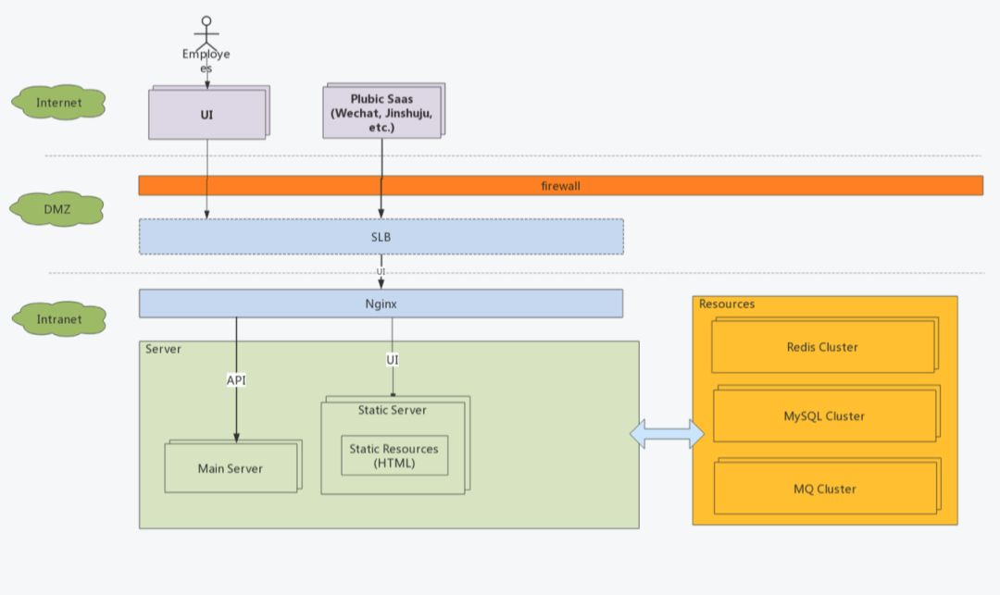

早期开发只有两个人，考虑微服务之类的都是多余。不过由于受前公司影响，最初就决定了前后端分离的路线，因为不需要考虑SEO的问题，索性就做成了SPA单页应用。多说一句，前后端分离也不一定就不能服务端渲染，例如电商系统或者一些匿名即可访问的系统，加一层薄薄的View层，无论是PHP还是用Thymeleaf都是不错的选择。
部署架构上，我们使用Nginx代理前端HTML资源，在接收请求时根据路径反向代理到server的8080端口实现业务。

接口定义
接口按照标准的Restful来定义：
版本，统一跟在 /api/后面，例如 /api/v2
以资源为中心，使用复数表述，例如/api/contacts，也可以嵌套，如/api/groups/1/contacts/100
url中尽量不使用动词，实践中发现做到这一点真的比较难，每个研发人员的思路不一致，起的名字也千奇百怪，都需要在代码Review中覆盖。
动作支持，POST / PUT / DELELE / GET ，这里有一个坑，PUT和PATCH都是更新，但是PUT是全量更新而PATCH是部分更新，前者如果传入的字段是空（未传也视为空）那么也会被更新到数据库中。目前我们虽然是使用PUT但是忽略空字段和未传字段，本质上是一种部分更新，这也带来了一些问题，比如确有置空的业务需要特殊处理。
接口通过swagger生成文档供前端同事使用。
持续集成（CI）
团队初始成员之前都有在大团队共事的经历，所以对于质量管控和流程管理都有一些共同的要求。因此在开发之初就引入了集成测试的体系，可以直接开发针对接口的测试用例，统一执行并计算覆盖率。
一般来说代码自动执行的都是单元测试（Unit Test），我们之所以叫集成测试是因为测试用例是针对API的，并且包含了数据库的读写，MQ的操作等等，除了外部服务的依赖基本都是符合真实生产场景，相当于把Jmeter的事情直接在Java层面做掉了。这在开发初期为我们提供了非常大的便利性。但值得注意的是，由于数据库以及其他资源的引入，数据准备以及数据清理时要考虑的问题就会更多，例如如何控制并行任务之间的测试数据互不影响等等。
为了让这一套流程可以自动化的运作起来， 引入Jenkins也是理所当然的事情了。
开发人员提交代码进入gerrit中，Jenkins被触发开始编译代码并执行集成测试，完成后生成测试报告，测试通过再由reviewer进行代码Review。在单体应用时代这样的CI架构已经足够好用，由于有集成测试的覆盖，在保持API兼容性的前提下进行代码重构都会变得更有信心。
服务拆分原则
从数据层面看，最简单的方式就是看数据库的表之间是否有比较少的关联。例如最容易分离的一般来说都是用户管理模块。如果从领域驱动设计（DDD）看，其实一个服务就是一个或几个相关联的领域模型，通过少量数据冗余划清服务边界。单个服务内通过领域服务完成多个领域对象协作。当然DDD比较复杂，要求领域对象设计上是充血模型而非贫血模型。从实践角度讲，充血模型对于大部分开发人员来说难度非常高，什么代码应该属于行为，什么属于领域服务，很多时候非常考验人员水平。
服务拆分是一个大工程，往往需要几个对业务以及数据最熟悉的人一起讨论，甚至要考虑到团队结构，最终的效果是服务边界清晰， 没有环形依赖和避免双向依赖。
框架选择
由于之前的单体服务使用的是Spring Boot，所以框架自然而的选择了Spring Cloud。其实个人认为微服务框架不应该限制技术与语言，但生产实践中发现无论Dubbo还是Spring Cloud都具有侵入性，我们在将Node.js应用融入Spring Cloud体系时就发现了许多问题。也许未来的Service Mesh才是更合理的发展道路。
这是典型的Spring Cloud的使用方法，该图取自纯洁的微笑公众号。
Zuul作为Gateway，分发不同客户端的请求到具体Service
Erueka作为注册中心，完成了服务发现和服务注册
每个Service包括Gateway都自带了Hystrix提供的限流和熔断功能
Service之间通过Feign和Ribbon互相调用，Feign实际上是屏蔽了Service对Erueka的操作
上文说的一旦要融入异构语言的Service，那么服务注册，服务发现，服务调用，熔断和限流都需要自己处理。再有关于Zuul要多说几句，Spring Cloud提供的Zuul对Netflix版本的做了裁剪，去掉了动态路由功能（Groovy实现），另外一点就是Zuul的性能一般，由于采用同步编程模型，对于IO密集型等后台处理时间长的链路非常容易将servlet的线程池占满，所以如果将Zuul与主要Service放置在同一台物理机上，在流量大的情况下，Zuul的资源消耗非常大。实际测试也发现经过Zuul与直接调用Service的性能损失在30%左右，并发压力大时更为明显。现在Spring Cloud Gateway是Pivotal主推的，支持异步编程模型，后续架构优化也许会采用，或是直接使用Kong这种基于Nginx的网关来提供性能。当然同步模型也有优点，编码更简单，后文将会提到使用ThreadLocal如何建立链路跟踪。
架构改造
经过大半年的改造以及新需求的加入，单体服务被不断拆分，最终形成了10余个微服务，并且搭建了Spark用于BI。初步形成两大体系，微服务架构的在线业务系统（OLTP） + Spark大数据分析系统（OLAP）。数据源从只有MySQL增加到了ES和Hive。多数据源之间的数据同步也是值得一说的话题，但内容太多不在此文赘述。
服务拆分我们采用直接割接的方式，数据表也是整体迁移。因为几次大改造的升级申请了停服，所以步骤相对简单。如果需要不停服升级，那么应该采用先双写再逐步切换的方式保证业务不受影响。
自动化部署
与CI比起来，持续交付（CD）实现更为复杂，在资源不足的情况我们尚未实现CD，只是实现执行了自动化部署。
由于生产环境需要通过跳板机操作，所以我们通过Jenkins生成jar包传输到跳板机，之后再通过Ansible部署到集群。
简单粗暴的部署方式在小规模团队开发时还是够用的，只是需要在部署前保证测试（人工测试 + 自动化测试）到位。
链路跟踪
开源的全链路跟踪很多，比如Spring Cloud Sleuth + Zipkin，国内有美团的CAT等等。其目的就是当一个请求经过多个服务时，可以通过一个固定值获取整条请求链路的行为日志，基于此可以再进行耗时分析等，衍生出一些性能诊断的功能。不过对于我们而言，首要目的就是trouble shooting，出了问题需要快速定位异常出现在什么服务，整个请求的链路是怎样的。
为了让解决方案轻量，我们在日志中打印RequestId以及TraceId来标记链路。RequestId在Gateway生成表示唯一一次请求，TraceId相当于二级路径，一开始与RequestId一样，但进入线程池或者消息队列后，TraceId会增加标记来标识唯一条路径。举个例子，当一次请求会向MQ发送一个消息，那么这个消息可能会被多个消费者消费，此时每个消费线程都会自己生成一个TraceId来标记消费链路。加入TraceId的目的就是为了避免只用RequestId过滤出太多日志。实现如图所示：
简单的说，通过ThreadLocal存放APIRequestContext串联单服务内的所有调用，当跨服务调用时，将APIRequestContext信息转化为Http Header，被调用方获取到Http Header后再次构建APIRequestContext放入ThreadLocal，重复循环保证RequestId和TraceId不丢失即可。如果进入MQ，那么APIRequestContext信息转化为Message Header即可（基于Rabbitmq实现）。
当日志汇总到日志系统后，如果出现问题，只需要捕获发生异常的RequestId或是TraceId即可进行问题定位。
经过一年来的使用，基本可以满足绝大多数trouble shooting的场景，一般半小时内即可定位到具体业务。
运维监控
在容器化之前，采用Telegraf + InfluxDB + Grafana的方案。Telegraf作为探针收集JVM，System，MySQL等资源的信息，写入InfluxDB，最终通过Grafana做数据可视化。Spring Boot Actuator可以配合Jolokia暴露JVM的Endpoint。整个方案零编码，只需要花时间配置。
架构改造
因为在做微服务之初就计划了容器化，所以架构并未大动，只是每个服务都会建立一个Dockerfile用于创建docker image。
涉及变化的部分包括：
CI中多了构建docker image的步骤
自动化测试过程中将数据库升级从应用中剥离单独做成docker image
生产中用Kubernetes自带的Service替代了Eruka
理由下文一一道来。
Spring Cloud与Kubernetes的融合
我们使用的是Redhat的OpenShift，可以认为是Kubernetes企业版，其本身就有Service的概念。一个Service下有多个Pod，Pod内即是一个可服务单元。Service之间互相调用时Kubernetes会提供默认的负载均衡控制，发起调用方只需要写被调用方的ServiceId即可。这一点和Spring Cloud Fegin使用Ribbon提供的功能如出一辙。也就是说服务治理可以通过Kubernetes来解决，那么为什么要替换呢？其实上文提到了，Spring Cloud技术栈对于异构语言的支持问题，我们有许多BFF（Backend for Frontend）是使用Node.js实现的，这些服务要想融合到Spring Cloud中，服务注册，负载均衡，心跳检查等等都要自己实现。如果以后还有其他语言架构的服务加入进来，这些轮子又要重造。基于此类原因综合考量后，决定采用OpenShift所提供的网络能力替换Eruka。
由于本地开发和联调过程中依然依赖Eruka，所以只在生产上通过配置参数来控制：
eureka.client.enabled设置为false，停止各服务的Eureka注册
ribbon.eureka.enabled设置为false，让Ribbon不从Eureka获取服务列表
以服务foo为例，foo.ribbon.listofservers 设置为 http://foo:8080，那么当一个服务需要使用服务foo的时候，就会直接调用到http://foo:8080
CI的改造
CI的改造主要是多了一部编译docker image并打包到Harbor的过程，部署时会直接从Harbor拉取镜像。另一个就是数据库的升级工具。之前我们使用flyway作为数据库升级工具，当应用启动时自动执行SQL脚本。随着服务实例越来越多，一个服务的多个实例同时升级的情况也时有发生，虽然flyway是通过数据库锁实现了升级过程不会有并发，但会导致被锁服务启动时间变长的问题。从实际升级过程来看，将可能发生的并发升级变为单一进程可能更靠谱。此外后期分库分表的架构也会使随应用启动自动升级数据库变的困难。综合考量，我们将升级任务做了拆分，每个服务都有自己的升级项目并会做容器化。在使用时，作为run once的工具来使用，即docker run -rm的方式。并且后续也支持了设定目标版本的功能，在私有化项目的跨版本升级中起到了非常好的效果。
至于自动部署，由于服务之间存在上下游关系，例如Config，Eruka等属于基本服务被其他服务依赖，部署也产生了先后顺序。基于Jenkins做Pipeline可以很好的解决这个问题。
其实以上的每一点都可以深入的写成一篇文章，微服务的架构演进涉及到开发，测试和运维，要求团队内多工种紧密合作。分治是软件行业解决大系统的不二法门，作为小团队我们并没有盲目追新，而是在发展的过程通过服务化的方式解决问题。从另一方面我们也体会到了微服务对于人的要求，以及对于团队的挑战都比过去要高要大。未来仍需探索，演进仍在路上。
作者：Dean，曾就职SAP，目前在初创团队任职架构师。
原文链接：
https://deanwangpro.com/2019/02/18/road-of-microservice/